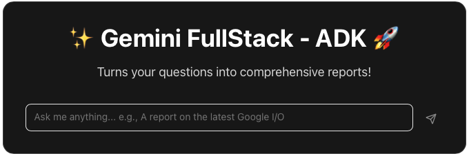
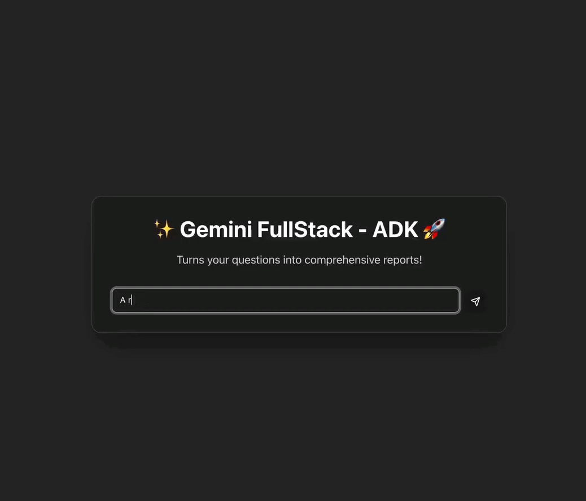

Last Updated: 2025-07-05
In this codelab, you're going to reuse an example application that contains the frontend and backend for a complete chatbot. You will:
Download and unzip the example code to your working folder. You should see a l6-fullstack folder - this is your project folder for this codelab.
Open AI Studio and follow the instructions to get an API key.
Our agents will need the API key to use Gemini. Inside your app folder, create a .env file for the environment variables:
app/.env
GOOGLE_GENAI_USE_VERTEXAI=FALSE
GOOGLE_API_KEY=[YOUR API KEY HERE]Copy/paste your API key to replace [YOUR API KEY HERE].
The backend application is Python (using ADK) and therefore we install dependencies and setup the environment with uv:
$ uv sync
Using CPython 3.11.3 interpreter at: /opt/homebrew/opt/python@3.11/bin/python3.11
Creating virtual environment at: .venv
Resolved 94 packages in 7ms
Built gemini-fullstack @ file:///Users/ant/Dev/codelabs-agents/l6-fullstack
Prepared 14 packages in 4.67s
Installed 82 packages in 165ms
The frontend is TypeScript (using React) and we can use npm:
$ npm --prefix frontend install added 335 packages, and audited 336 packages in 7s
You will need 2 terminal windows, one for the frontend and one for the backend.
First, start the backend:
$ uv run adk api_server app --allow_origins="*" INFO: Started server process [1298] INFO: Waiting for application startup. INFO: Application startup complete. INFO: Uvicorn running on http://127.0.0.1:8000 (Press CTRL+C to quit)
Then, in another terminal tab, start the frontend:
$ npm --prefix frontend run dev > frontend@0.0.0 dev > vite VITE v6.3.4 ready in 1167 ms ➜ Local: http://localhost:5173/app/ ➜ Network: http://192.168.1.130:5173/app/ ➜ Network: http://192.168.64.1:5173/app/ ➜ press h + enter to show help
Open your web browser at the given address, e.g. http://localhost:5173
Test the application.

Task: Using what you've learnt in earlier workshops, think of an agent that would help you and modify the example to make it a reality.
Take a look at the contents of the frontend folder - it is a regular React app written in TypeScript. If you make changes to the frontend code then the hot-reload means you'll immediately see the result on save.
Find the file src/components/WelcomeScreen.tsx and look for the HTML showing the header section of the card (maybe lines 29 to 36). Make some changes and check you can see the result in the browser.
src/components/WelcomeScreen.tsx
...
{/* Header section of the card */}
<div className="text-center space-y-4">
<h1 className="text-4xl font-bold text-white flex items-center justify-center gap-3">
✨ Recipe Maker 🌮
</h1>
<p className="text-lg text-neutral-300 max-w-md mx-auto">
Enter any dish that you'd like to make!
</p>
</div>
...Next, open the app folder and you will find agent.py. The backend of the application is simply the ADK, and so you can write any agent or multiagent in the app folder.
Continuing the theme of a recipe maker, you could try the following agent.
agent.py
from google.adk.agents import Agent
prompt = """You are a recipe assistant, helping users create and modify recipes.
The user will provide a dish name.
You will respond with a recipe that includes ingredients, instructions, and cooking time.
If the user asks for modifications, you will adjust the recipe accordingly.
Do not answer questions about other topics."""
root_agent = Agent(
model='gemini-2.5-flash',
name='root_agent',
description='A recipe maker.',
instruction=prompt
)That's the end of the workshop. We hope you've enjoyed learning about agents and we're excited to see what you can build today and in the future.